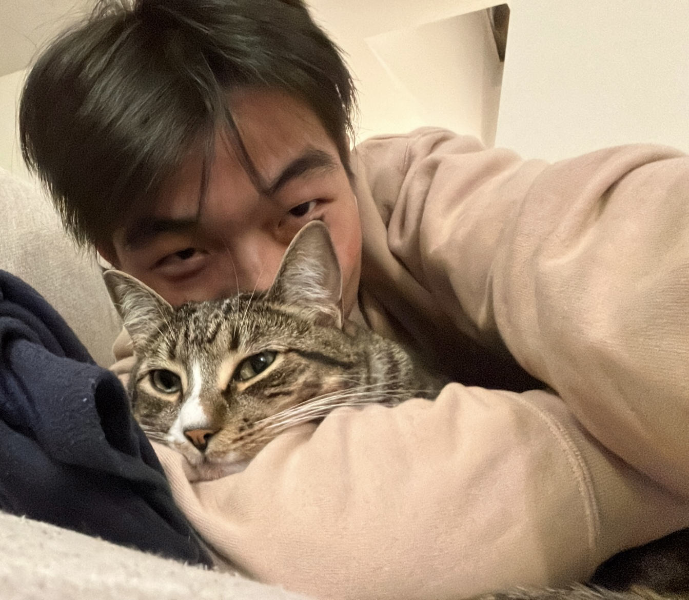
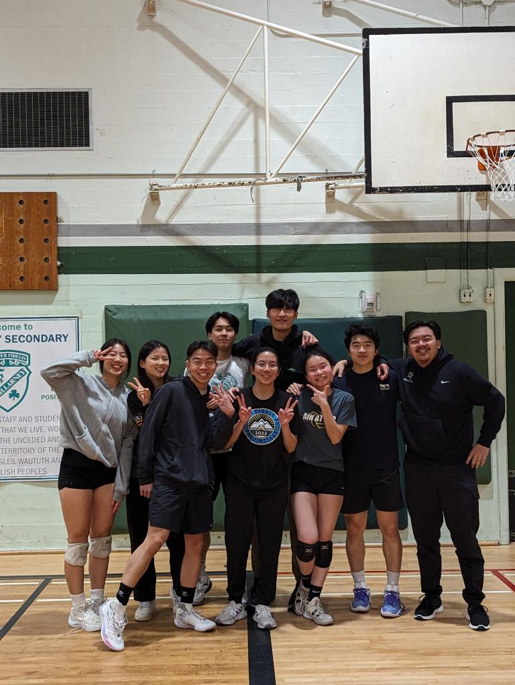
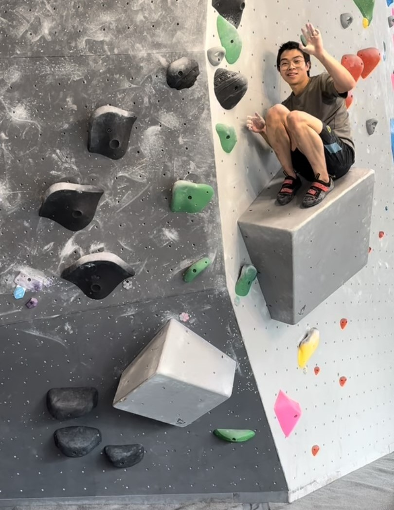

About Me
Hey there, I'm Kevin! I am a third year computing science student at SFU. I like to play video games, play volleyball, and go bouldering. My interests in computers and coding began when I built my own computer at the early age of 12 years old. In this website, you can explore my hobbies, professional status and skills, and where to contact me. Happy browsing!
Find me here!


{kind=link}
My Work + Skills
Ongoing Work
Past work
Work Experience
- Coco Fresh Tea & Juice - Shift Leader
- Canadian Tire - Floor Staff
- Private Tutor - Grade 6-12 Math
- Longshore Bombcart Driver
Skillsets and Coding Proficiencies
Skills
- Hardworking
- Quick mental calculation
- 90+ WPM typing speed
- Advanced knowledge in computer hardware
Language Proficiency
- Python: Proficient
- HTML: Proficient
- CSS: Proficient
- C/C++: Proficient
- JavaScript: Intermediate
Let's work together!
My Hobbies & Interests
Playing Volleyball
I first picked up this sport in grade 6, and have been playing all throughout high school. Going into post secondary, my friends and I made an adult league team and play every week.
Indoor Bouldering
My sister first introduced me to bouldering less than 4 months ago. I fell in love with the problem-solving and video game-like aspects of the sport. Now I climb regularly.